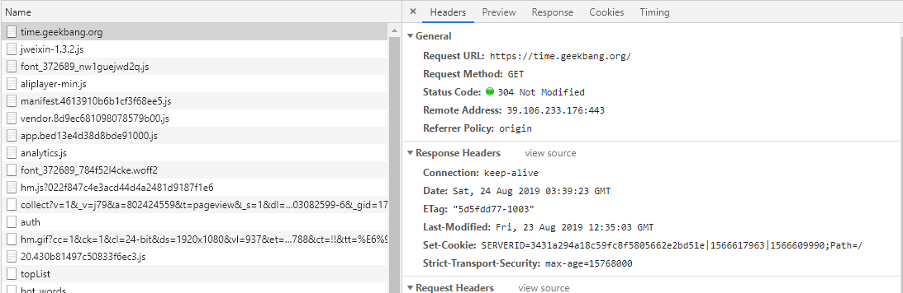
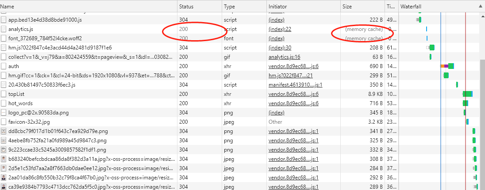
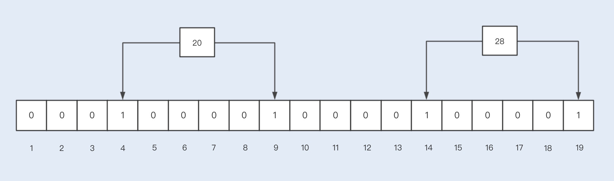

- 00 开篇词你为什么需要学习并发编程？.md.html
- 01 如何制定性能调优标准？.md.html
- 02 如何制定性能调优策略？.md.html
- 03 字符串性能优化不容小觑，百M内存轻松存储几十G数据.md.html
- 04 慎重使用正则表达式.md.html
- 05 ArrayList还是LinkedList？使用不当性能差千倍.md.html
- 06 Stream如何提高遍历集合效率？.md.html
- 07 深入浅出HashMap的设计与优化.md.html
- 08 网络通信优化之IO模型：如何解决高并发下IO瓶颈？.md.html
- 09 网络通信优化之序列化：避免使用Java序列化.md.html
- 10 网络通信优化之通信协议：如何优化RPC网络通信？.md.html
- 11 答疑课堂：深入了解NIO的优化实现原理.md.html
- 12 多线程之锁优化（上）：深入了解Synchronized同步锁的优化方法.md.html
- 13 多线程之锁优化（中）：深入了解Lock同步锁的优化方法.md.html
- 14 多线程之锁优化（下）：使用乐观锁优化并行操作.md.html
- 15 多线程调优（上）：哪些操作导致了上下文切换？.md.html
- 16 多线程调优（下）：如何优化多线程上下文切换？.md.html
- 17 并发容器的使用：识别不同场景下最优容器.md.html
- 18 如何设置线程池大小？.md.html
- 19 如何用协程来优化多线程业务？.md.html
- 20 磨刀不误砍柴工：欲知JVM调优先了解JVM内存模型.md.html
- 21 深入JVM即时编译器JIT，优化Java编译.md.html
- 22 如何优化垃圾回收机制？.md.html
- 23 如何优化JVM内存分配？.md.html
- 24 内存持续上升，我该如何排查问题？.md.html
- 25 答疑课堂：模块四热点问题解答.md.html
- 26 单例模式：如何创建单一对象优化系统性能？.md.html
- 27 原型模式与享元模式：提升系统性能的利器.md.html
- 28 如何使用设计模式优化并发编程？.md.html
- 29 生产者消费者模式：电商库存设计优化.md.html
- 30 装饰器模式：如何优化电商系统中复杂的商品价格策略？.md.html
- 31 答疑课堂：模块五思考题集锦.md.html
- 32 MySQL调优之SQL语句：如何写出高性能SQL语句？.md.html
- 33 MySQL调优之事务：高并发场景下的数据库事务调优.md.html
- 34 MySQL调优之索引：索引的失效与优化.md.html
- 35 记一次线上SQL死锁事故：如何避免死锁？.md.html
- 36 什么时候需要分表分库？.md.html
- 37 电商系统表设计优化案例分析.md.html
- 38 数据库参数设置优化，失之毫厘差之千里.md.html
- 39 答疑课堂：MySQL中InnoDB的知识点串讲.md.html
- 41 如何设计更优的分布式锁？.md.html
- 42 电商系统的分布式事务调优.md.html
- 43 如何使用缓存优化系统性能？.md.html
- 44 记一次双十一抢购性能瓶颈调优.md.html
- 加餐 什么是数据的强、弱一致性？.md.html
- 加餐 推荐几款常用的性能测试工具.md.html
- 答疑课堂：模块三热点问题解答.md.html
- 结束语 栉风沐雨，砥砺前行！.md.html
43 如何使用缓存优化系统性能？
你好，我是刘超。
缓存是我们提高系统性能的一项必不可少的技术，无论是前端、还是后端，都应用到了缓存技术。前端使用缓存，可以降低多次请求服务的压力；后端使用缓存，可以降低数据库操作的压力，提升读取数据的性能。
今天我们将从前端到服务端，系统了解下各个层级的缓存实现，并分别了解下各类缓存的优缺点以及应用场景。
前端缓存技术
如果你是一位 Java 开发工程师，你可能会想，我们有必要去了解前端的技术吗？
不想当将军的士兵不是好士兵，作为一个技术人员，不想做架构师的开发不是好开发。作为架构工程师的话，我们就很有必要去了解前端的知识点了，这样有助于我们设计和优化系统。前端做缓存，可以缓解服务端的压力，减少带宽的占用，同时也可以提升前端的查询性能。
1. 本地缓存
平时使用拦截器（例如 Fiddler）或浏览器 Debug 时，我们经常会发现一些接口返回 304 状态码 + Not Modified 字符串，如下图中的极客时间 Web 首页。

如果我们对前端缓存技术不了解，就很容易对此感到困惑。浏览器常用的一种缓存就是这种基于 304 响应状态实现的本地缓存了，通常这种缓存被称为协商缓存。
协商缓存，顾名思义就是与服务端协商之后，通过协商结果来判断是否使用本地缓存。
一般协商缓存可以基于请求头部中的 If-Modified-Since 字段与返回头部中的 Last-Modified 字段实现，也可以基于请求头部中的 If-None-Match 字段与返回头部中的 ETag 字段来实现。
两种方式的实现原理是一样的，前者是基于时间实现的，后者是基于一个唯一标识实现的，相对来说后者可以更加准确地判断文件内容是否被修改，避免由于时间篡改导致的不可靠问题。下面我们再来了解下整个缓存的实现流程：
- 当浏览器第一次请求访问服务器资源时，服务器会在返回这个资源的同时，在 Response 头部加上 ETag 唯一标识，这个唯一标识的值是根据当前请求的资源生成的；
- 当浏览器再次请求访问服务器中的该资源时，会在 Request 头部加上 If-None-Match 字段，该字段的值就是 Response 头部加上 ETag 唯一标识；
- 服务器再次收到请求后，会根据请求中的 If-None-Match 值与当前请求的资源生成的唯一标识进行比较，如果值相等，则返回 304 Not Modified，如果不相等，则在 Response 头部加上新的 ETag 唯一标识，并返回资源；
- 如果浏览器收到 304 的请求响应状态码，则会从本地缓存中加载资源，否则更新资源。
本地缓存中除了这种协商缓存，还有一种就是强缓存的实现。
强缓存指的是只要判断缓存没有过期，则直接使用浏览器的本地缓存。如下图中，返回的是 200 状态码，但在 size 项中标识的是 memory cache。

强缓存是利用 Expires 或者 Cache-Control 这两个 HTTP Response Header 实现的，它们都用来表示资源在客户端缓存的有效期。
Expires 是一个绝对时间，而 Cache-Control 是一个相对时间，即一个过期时间大小，与协商缓存一样，基于 Expires 实现的强缓存也会因为时间问题导致缓存管理出现问题。我建议使用 Cache-Control 来实现强缓存。具体的实现流程如下：
- 当浏览器第一次请求访问服务器资源时，服务器会在返回这个资源的同时，在 Response 头部加上 Cache-Control，Cache-Control 中设置了过期时间大小；
- 浏览器再次请求访问服务器中的该资源时，会先通过请求资源的时间与 Cache-Control 中设置的过期时间大小，来计算出该资源是否过期，如果没有，则使用该缓存，否则请求服务器；
- 服务器再次收到请求后，会再次更新 Response 头部的 Cache-Control。
2. 网关缓存
除了以上本地缓存，我们还可以在网关中设置缓存，也就是我们熟悉的 CDN。
CDN 缓存是通过不同地点的缓存节点缓存资源副本，当用户访问相应的资源时，会调用最近的 CDN 节点返回请求资源，这种方式常用于视频资源的缓存。
服务层缓存技术
前端缓存一般用于缓存一些不常修改的常量数据或一些资源文件，大部分接口请求的数据都缓存在了服务端，方便统一管理缓存数据。
服务端缓存的初衷是为了提升系统性能。例如，数据库由于并发查询压力过大，可以使用缓存减轻数据库压力；在后台管理中的一些报表计算类数据，每次请求都需要大量计算，消耗系统 CPU 资源，我们可以使用缓存来保存计算结果。
服务端的缓存也分为进程缓存和分布式缓存，在 Java 中进程缓存就是 JVM 实现的缓存，常见的有我们经常使用的容器类，ArrayList、ConcurrentHashMap 等，分布式缓存则是基于 Redis 实现的缓存。
1. 进程缓存
对于进程缓存，虽然数据的存取会更加高效，但 JVM 的堆内存数量是有限的，且在分布式环境下很难同步各个服务间的缓存更新，所以我们一般缓存一些数据量不大、更新频率较低的数据。常见的实现方式如下：
// 静态常量
public final staticS String url = "https://time.geekbang.org";
//list 容器
public static List<String> cacheList = new Vector<String>();
//map 容器
private static final Map<String, Object> cacheMap= new ConcurrentHashMap<String, Object>();
除了 Java 自带的容器可以实现进程缓存，我们还可以基于 Google 实现的一套内存缓存组件 Guava Cache 来实现。
Guava Cache 适用于高并发的多线程缓存，它和 ConcurrentHashMap 一样，都是基于分段锁实现的并发缓存。
Guava Cache 同时也实现了数据淘汰机制，当我们设置了缓存的最大值后，当存储的数据超过了最大值时，它就会使用 LRU 算法淘汰数据。我们可以通过以下代码了解下 Guava Cache 的实现：
public class GuavaCacheDemo {
public static void main(String[] args) {
Cache<String,String> cache = CacheBuilder.newBuilder()
.maximumSize(2)
.build();
cache.put("key1","value1");
cache.put("key2","value2");
cache.put("key3","value3");
System.out.println(" 第一个值：" + cache.getIfPresent("key1"));
System.out.println(" 第二个值：" + cache.getIfPresent("key2"));
System.out.println(" 第三个值：" + cache.getIfPresent("key3"));
}
}
运行结果：
第一个值：null
第二个值：value2
第三个值：value3
那如果我们的数据量比较大，且数据更新频繁，又是在分布式部署的情况下，想要使用 JVM 堆内存作为缓存，这时我们又该如何去实现呢？
Ehcache 是一个不错的选择，Ehcache 经常在 Hibernate 中出现，主要用来缓存查询数据结果。Ehcache 是 Apache 开源的一套缓存管理类库，是基于 JVM 堆内存实现的缓存，同时具备多种缓存失效策略，支持磁盘持久化以及分布式缓存机制。
2. 分布式缓存
由于高并发对数据一致性的要求比较严格，我一般不建议使用 Ehcache 缓存有一致性要求的数据。对于分布式缓存，我们建议使用 Redis 来实现，Redis 相当于一个内存数据库，由于是纯内存操作，又是基于单线程串行实现，查询性能极高，读速度超过了 10W 次 / 秒。
Redis 除了高性能的特点之外，还支持不同类型的数据结构，常见的有 string、list、set、hash 等，还支持数据淘汰策略、数据持久化以及事务等。
两种缓存讲完了，接下来我们看看其中可能出现的问题。
数据库与缓存数据一致性问题
在查询缓存数据时，我们会先读取缓存，如果缓存中没有该数据，则会去数据库中查询，之后再放入到缓存中。
当我们的数据被缓存之后，一旦数据被修改（修改时也是删除缓存中的数据）或删除，我们就需要同时操作缓存和数据库。这时，就会存在一个数据不一致的问题。
例如，在并发情况下，当 A 操作使得数据发生删除变更，那么该操作会先删除缓存中的数据，之后再去删除数据库中的数据，此时若是还没有删除成功，另外一个请求查询操作 B 进来了，发现缓存中已经没有了数据，则会去数据库中查询，此时发现有数据，B 操作获取之后又将数据存放在了缓存中，随后数据库的数据又被删除了。此时就出现了数据不一致的情况。
那如果先删除数据库，再删除缓存呢？
我们可以试一试。在并发情况下，当 A 操作使得数据发生删除变更，那么该操作会先删除了数据库的操作，接下来删除缓存，失败了，那么缓存中的数据没有被删除，而数据库的数据已经被删除了，同样会存在数据不一致的问题。
所以，我们还是需要先做缓存删除操作，再去完成数据库操作。那我们又该如何避免高并发下，数据更新删除操作所带来的数据不一致的问题呢？
通常的解决方案是，如果我们需要使用一个线程安全队列来缓存更新或删除的数据，当 A 操作变更数据时，会先删除一个缓存数据，此时通过线程安全的方式将缓存数据放入到队列中，并通过一个线程进行数据库的数据删除操作。
当有另一个查询请求 B 进来时，如果发现缓存中没有该值，则会先去队列中查看该数据是否正在被更新或删除，如果队列中有该数据，则阻塞等待，直到 A 操作数据库成功之后，唤醒该阻塞线程，再去数据库中查询该数据。
但其实这种实现也存在很多缺陷，例如，可能存在读请求被长时间阻塞，高并发时低吞吐量等问题。所以我们在考虑缓存时，如果数据更新比较频繁且对数据有一定的一致性要求，我通常不建议使用缓存。
缓存穿透、缓存击穿、缓存雪崩
对于分布式缓存实现大数据的存储，除了数据不一致的问题以外，还有缓存穿透、缓存击穿、缓存雪崩等问题，我们平时实现缓存代码时，应该充分、全面地考虑这些问题。
缓存穿透是指大量查询没有命中缓存，直接去到数据库中查询，如果查询量比较大，会导致数据库的查询流量大，对数据库造成压力。
通常有两种解决方案，一种是将第一次查询的空值缓存起来，同时设置一个比较短的过期时间。但这种解决方案存在一个安全漏洞，就是当黑客利用大量没有缓存的 key 攻击系统时，缓存的内存会被占满溢出。
另一种则是使用布隆过滤算法（BloomFilter），该算法可以用于检查一个元素是否存在，返回结果有两种：可能存在或一定不存在。这种情况很适合用来解决故意攻击系统的缓存穿透问题，在最初缓存数据时也将 key 值缓存在布隆过滤器的 BitArray 中，当有 key 值查询时，对于一定不存在的 key 值，我们可以直接返回空值，对于可能存在的 key 值，我们会去缓存中查询，如果没有值，再去数据库中查询。
BloomFilter 的实现原理与 Redis 中的 BitMap 类似，首先初始化一个 m 长度的数组，并且每个 bit 初始化值都是 0，当插入一个元素时，会使用 n 个 hash 函数来计算出 n 个不同的值，分别代表所在数组的位置，然后再将这些位置的值设置为 1。
假设我们插入两个 key 值分别为 20,28 的元素，通过两次哈希函数取模后的值分别为 4,9 以及 14,19，因此 4,9 以及 14,19 都被设置为 1。

那为什么说 BloomFilter 返回的结果是可能存在和一定不存在呢？
假设我们查找一个元素 25，通过 n 次哈希函数取模后的值为 1,9,14。此时在 BitArray 中肯定是不存在的。而当我们查找一个元素 21 的时候，n 次哈希函数取模后的值为 9,14，此时会返回可能存在的结果，但实际上是不存在的。
BloomFilter 不允许删除任何元素的，为什么？假设以上 20,25,28 三个元素都存在于 BitArray 中，取模的位置值分别为 4,9、1,9,14 以及 14,19，如果我们要删除元素 25，此时需要将 1,9,14 的位置都置回 0，这样就影响 20,28 元素了。
因此，BloomFilter 是不允许删除任何元素的，这样会导致已经删除的元素依然返回可能存在的结果，也会影响 BloomFilter 判断的准确率，解决的方法则是重建一个 BitArray。
那什么缓存击穿呢？在高并发情况下，同时查询一个 key 时，key 值由于某种原因突然失效（设置过期时间或缓存服务宕机），就会导致同一时间，这些请求都去查询数据库了。这种情况经常出现在查询热点数据的场景中。通常我们会在查询数据库时，使用排斥锁来实现有序地请求数据库，减少数据库的并发压力。
缓存雪崩则与缓存击穿差不多，区别就是失效缓存的规模。雪崩一般是指发生大规模的缓存失效情况，例如，缓存的过期时间同一时间过期了，缓存服务宕机了。对于大量缓存的过期时间同一时间过期的问题，我们可以采用分散过期时间来解决；而针对缓存服务宕机的情况，我们可以采用分布式集群来实现缓存服务。
总结
从前端到后端，对于一些不常变化的数据，我们都可以将其缓存起来，这样既可以提高查询效率，又可以降低请求后端的压力。对于前端来说，一些静态资源文件都是会被缓存在浏览器端，除了静态资源文件，我们还可以缓存一些常量数据，例如商品信息。
服务端的缓存，包括了 JVM 的堆内存作为缓存以及 Redis 实现的分布式缓存。如果是一些不常修改的数据，数据量小，且对缓存数据没有严格的一致性要求，我们就可以使用堆内存缓存数据，这样既实现简单，查询也非常高效。如果数据量比较大，且是经常被修改的数据，或对缓存数据有严格的一致性要求，我们就可以使用分布式缓存来存储。
在使用后端缓存时，我们应该注意数据库和缓存数据的修改导致的数据不一致问题，如果对缓存与数据库数据有非常严格的一致性要求，我就不建议使用缓存了。
同时，我们应该针对大量请求缓存的接口做好预防工作，防止查询缓存的接口出现缓存穿透、缓存击穿和缓存雪崩等问题。
思考题
在基于 Redis 实现的分布式缓存中，我们更新数据时，为什么建议直接将缓存中的数据删除，而不是更新缓存中的数据呢？